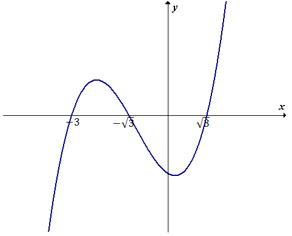
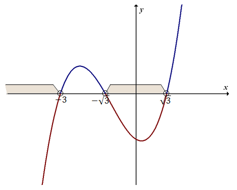
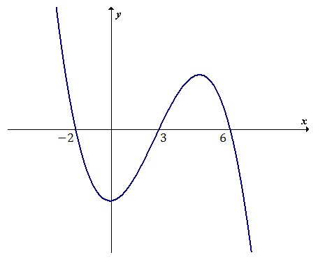
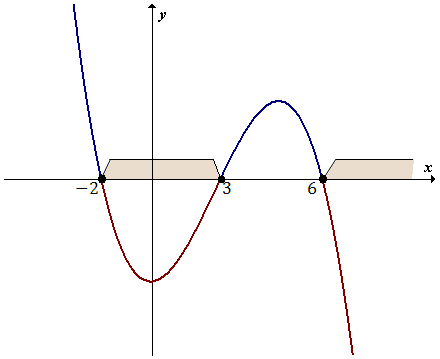
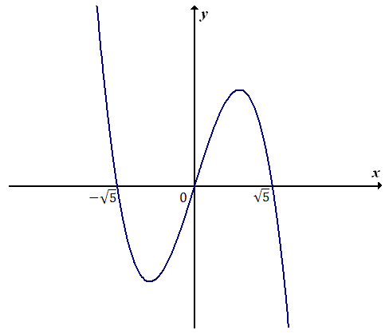
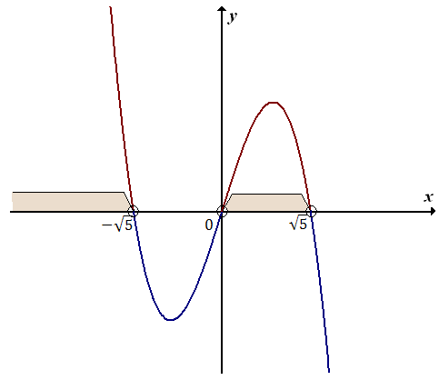

Rozwiąż nierówność \(x^3 + 3x^2 - 3x - 9 \lt 0\).
Lewą stronę
naszej nierówności traktujemy jako wielomian: \[W(x) = x^3 + 3x^2 - 3x - 9\] Wyznaczamy miejsca
zerowe tego wielomianu, rozwiązując równanie: \[\begin{split} x^3 + 3x^2 - 3x - 9 &= 0\\[6pt]
x^2(x + 3) - 3(x + 3) &= 0\\[6pt] (x + 3)(x^2 - 3) &= 0\\[6pt] (x + 3)(x - \sqrt{3})(x +
\sqrt{3}) &= 0\\[6pt] x + 3 = 0 \quad \lor \quad x - \sqrt{3} = 0 \quad &\lor \quad x + \sqrt{3}
= 0\\[6pt] x = -3 \quad \lor \quad x = \sqrt{3} \quad &\lor \quad x = -\sqrt{3} \end{split}\]
Mamy już wyliczone miejsca zerowe wielomianu \(W(x)\). Możemy zatem naszkicować wykres tego
wielomianu:  Patrzymy teraz na znak w naszej nierówności. Jest to znak
mniejszości (\(\lt\)). Zaznaczamy zatem ten fragment wykresu, który znajduje się pod osią
\(x\)-ów. Od razu zaznaczamy również odpowiednie przedziały na osi \(x\)-ów dla tych fragmentów
wykresu.  Zapisujemy zbiór rozwiązań nierówności: \[x \in (-\infty; -3)
\cup (-\sqrt{3}; \sqrt{3})\]
Rozwiąż nierówność \((-x - 2)(x - 3)(x - 6) \le 0\).
Lewą stronę
naszej nierówności traktujemy jako wielomian: \[W(x) = (-x - 2)(x - 3)(x - 6)\] Wyznaczamy
miejsca zerowe tego wielomianu, rozwiązując równanie: \[\begin{split} (-x - 2)(x - 3)(x - 6) &=
0\\[6pt] -x - 2 = 0 \quad \lor \quad x - 3 = 0 \quad &\lor \quad x - 6 = 0\\[6pt] x = -2 \quad
\lor \quad x = 3 \quad &\lor \quad x = 6 \end{split}\] Mamy już wyliczone miejsca zerowe
wielomianu \(W(x)\). Możemy zatem naszkicować wykres tego wielomianu: 
Patrzymy teraz na znak w naszej nierówności. Jest to znak mniejszości bądź równości (\(\le\)).
Zaznaczamy zatem ten fragment wykresu, który znajduje się pod osią \(x\)-ów, wraz z miejscami
zerowymi. Zaznaczamy również przedziały na osi \(x\)-ów, dla tych fragmentów wykresu.  Zapisujemy zbiór rozwiązań nierówności: \[x ∈ \langle -2; 3\rangle \cup
\langle 6; +\infty )\]
Rozwiąż nierówność \(-3x^3 + 15x \gt 0\).
Lewą stronę naszej
nierówności traktujemy jako wielomian: \[W(x) = -3x^3 + 15x\] Wyznaczamy miejsca zerowe tego
wielomianu, rozwiązując równanie: \[\begin{split} -3x^3 + 15x &= 0\\[6pt] -3x(x^2 - 5) &=
0\\[6pt] -3x(x - \sqrt{5})(x + \sqrt{5}) &= 0\\[6pt] x = 0 \quad \lor \quad x - \sqrt{5} = 0
\quad &\lor \quad x + \sqrt{5} = 0\\[6pt] x = 0 \quad \lor \quad x = \sqrt{5} \quad &\lor \quad
x = -\sqrt{5} \end{split}\] Mamy już wyliczone miejsca zerowe wielomianu \(W(x)\). Możemy zatem
naszkicować wykres tego wielomianu: 
Patrzymy teraz na znak w naszej nierówności. Jest to znak większości (\(\gt\)). Zaznaczamy zatem
ten fragment wykresu, który znajduje się nad osią \(x\)-ów. Od razu zaznaczamy również
odpowiednie przedziały na osi \(x\)-ów dla tych fragmentów wykresu.  Zapisujemy zbiór rozwiązań nierówności: \[x \in (-\infty; -\sqrt{5}) \cup (0;
\sqrt{5})\]